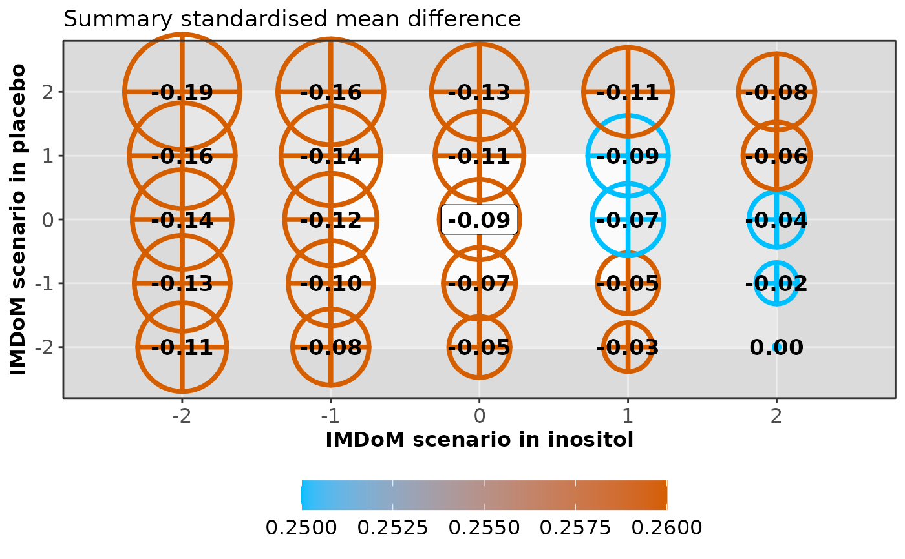

Creates the enhanced balloon plot for the summary effect size and
between-trial standard deviation, tau, under different scenarios
about the missingness parameter for a pair of interventions.
balloon_plot uses the scenarios considered in
run_sensitivity.
Arguments
- sens
An object of S3 class
run_sensitivity. See 'Value' inrun_sensitivity.- compar
A character vector with two elements indicating the pairwise comparison of interest. The first element refers to the 'experimental' and the second element to the 'control' intervention of the comparison.
- drug_names
A vector of labels with the name of the interventions in the order they appear in the argument
dataofrun_model.
Value
balloon_plot returns two enhanced balloon plots for one
comparison (see 'Details'):
- plot_effect_size
The enhanced balloon plot for the summary effect size (according to the argument
measureinherited byrun_sensitivity) for one pairwise comparison.- plot_tau
The enhanced balloon plot for tau. When the fixed-effect model has been performed in
run_sensitivity, the function will not return theplot_tau.
Details
For the plot_effect_size of the selected pairwise comparison,
the different colours and sizes of the bubbles reflect the
posterior standard deviation and the posterior mean, respectively.
A colour key appears below the plot. The size of the bubble is proportional
to the corresponding posterior mean.
Crossed bubbles indicate scenarios with conclusive evidence (the
95% credible interval excludes the null value), and filled bubbles
indicate scenarios with inconclusive evidence (the 95% credible interval
includes the null value). The missing-at-random assumption (primary
analysis) is labeled in a white frame.
Both axes illustrate the scenarios as specified in the argument
mean_scenarios of the run_sensitivity:
the x-axis refers to the 'experimental' intervention, and the y-axis refers
to the 'control' intervention.
The same enhanced balloon plot is created for tau (plot_tau).
However, filled bubbles indicate low statistical heterogeneity
(the posterior median of tau is lower than the median of the
prior distribution for the heterogeneity parameter),
and crossed bubbles indicate considerable statistical heterogeneity
(the posterior median of tau exceeds the median of the prior
distribution for the heterogeneity parameter).
balloon_plot can be used only when missing participant
outcome data have been extracted for at least one trial.
Otherwise, the execution of the function will be stopped and an error
message will be printed on the R console.
References
Spineli LM, Kalyvas C, Papadimitropoulou K. Quantifying the robustness of primary analysis results: A case study on missing outcome data in pairwise and network meta-analysis. Res Synth Methods 2021;12(4):475--490. doi: https://doi.org/10.1002/jrsm.1478
Examples
data("pma.taylor2004")
# Read results from 'run_sensitivity' (using the default arguments)
res_sens <- readRDS(system.file('extdata/res_sens_taylor.rds',
package = 'rnmamod'))
# The names of the interventions in the order they appear in the dataset
interv_names <- c("placebo", "inositol")
# Create the enhanced balloon plot for 'inositol versus placebo'
balloon_plot(sens = res_sens,
compar = c("inositol", "placebo"),
drug_names = interv_names)
#> $plot_effect_size
#> Warning: All aesthetics have length 1, but the data has 25 rows.
#> ℹ Did you mean to use `annotate()`?

#>
#> $plot_tau
#> Warning: All aesthetics have length 1, but the data has 25 rows.
#> ℹ Did you mean to use `annotate()`?
#>